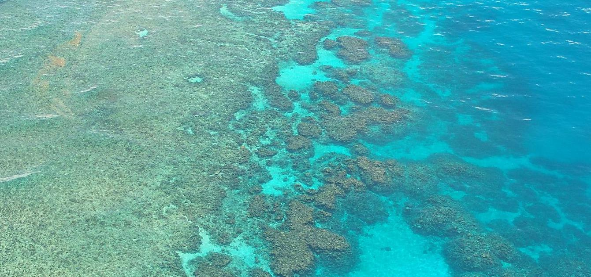

The Micro Catcher
This is a solution to UN's development goal number
14
Our solution is The Micro Catcher, an autonomous mini-submarine that cleans near shore for microplastics.
The Micro Catcher is cylinder shaped and about 1 meter long and 0.4 meters wide and tall. It has three propellers, one underneath and one on each side, for movement. The propellers on the side can adjust the angle, which makes the robot able to stabilize itself and to easily change its direction. It uses active sonar to make sure it knows where it is going and does not crash. The robot has a solar panel on top that it can open and close as needed.
Our first prototype will mainly be made out of recycled plastic. In the future, we want to be able to produce all our products from the microplastic we have collected. Our goal is to use every bit we collect to make something new. With the micro plastic we collect we will make small items and souvenirs to sell.
As the Micro Catcher swims through the water it cleans the water by filtering it through its body with a filter in front and a fine meshed filter in the back to send water out. This filter will make sure that the microplastic gets collected inside the robot, but that the water can get out. The average time the robot spends filling up the plastic storage is 12 hours. It takes so long to fill up because the filter only lets through pieces that are smaller than 5 mm.
The robot has a battery life of 6.5 hours before it must be charged. When it runs out of power, the robot floats to the sea surface and opens the solar panel. Then it charges until it is at 100%.
Because The Micro Catcher runs along the coast, it does not take long to swim back to its home base. It returns to its home base when it needs to be emptied or serviced. When the robot returns, it is registered so that the employees at the station know that there is a robot there that either needs to be emptied or needs service. We empty it and safely store the microplastic. We check if the Micro Catcher needs to be charged, if the filters need to be replaced, or if it has any damages. In the case that our Micro Catcher is found by others on sea, it is clearly labeled on the side with information about its mission and how to contact us to return it or release it.